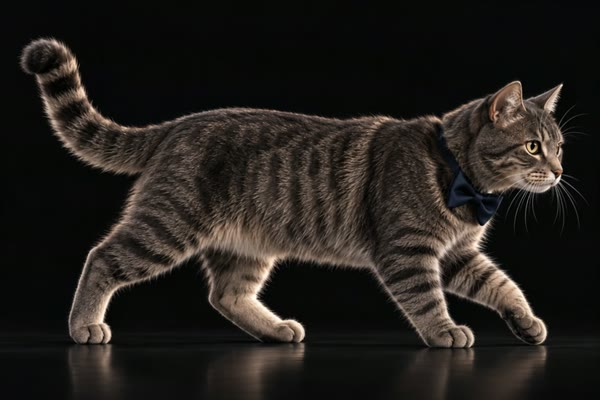
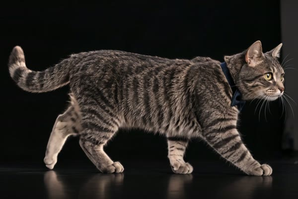

Sichtprobe · örtlich
Acht Zustände, aufbereitet aus den Originalen. Diese Seite wird nicht gebaut und nicht veröffentlicht. Sie soll eine Frage beantworten: Taugen die Clips so, wie sie sind?
Der Kasten unten trägt genau den Hintergrund, den der Rewards-Abschnitt heute hat. Die gestrichelten Linien zeigen Grundlinie und Mitte der Bühne.
Jeder Clip einfach in die Bühne eingepasst, sonst nichts. Drei Seitenverhältnisse, drei verschiedene Grundlinien. Wechseln Sie zwischen den Zuständen: Die Figur springt in Größe und Standhöhe.
Zustand wählen.
Dieselben Clips, aber vermessen und ausgerichtet: ein einheitlicher Maßstab Quellpunkt → Bühnenpunkt, dazu je Zustand ein Versatz, der Standlinie und Figurmitte auf denselben Punkt legt. Die Figur bleibt beim Wechsel an ihrem Platz.
Die Clips haben keinen Alphakanal. Der Hintergrund ist ein Fotostudio mit Boden und Spiegelung: gemessen 8–17 Helligkeit oben, 23–75 unten. Der Seitengrund liegt bei 24. Die Kante ist also real.
Drei Behandlungen im direkten Vergleich. Achten Sie besonders auf die dunklen Fellpartien am Rücken und die Kontur – wenn eine Behandlung die verschluckt, ist sie unbrauchbar.
ohne Behandlung
weiche Randmaske
mix-blend-mode: lighten
Maske: löst die Kante weich auf, kostet aber am Rand
auch Figur – bei walk-right reicht die Katze bis an den
Bildrand, dort schneidet die Maske sichtbar an.
Aufhellen: der Videogrund ist dunkler als der
Seitengrund, deshalb verschwindet die Kante fast vollständig. Dafür
werden alle dunklen Bildteile durchsichtig – also auch dunkles
Fell und die Kontur. Genau das bitte hier beurteilen.
Kein harter Dauerlauf: Gemessen springt jeder Clip vom Ende zum
Anfang (mittlere Abweichung 11,8 bis 25,7 von 255). idle läuft
deshalb mit einer kurzen Blende neu an statt hart zu schleifen. Alle
anderen laufen einmal und kehren zu idle zurück.
Im Protokoll steht, wie viele Videoelemente gerade im Dokument hängen. Während einer Blende sind es kurz zwei, sonst genau eines.
walk-right läuft auf der Stelle: Anfang und
Ende zeigen die Figur bei Bildmitte 0,50 beziehungsweise 0,51. Das ist
kein Fehler – ein Laufzyklus auf der Stelle ist brauchbar, wenn die Bühne
die Bewegung übernimmt. Hier beides im Vergleich.
Zusätzlich zu prüfen: Die Figur verändert sich innerhalb des Clips. Am Anfang trägt sie eine Fliege am Hals, am Ende ein Halsband; auch die Fellzeichnung wandert. Anfangs- und Endbild nebeneinander:


Bei reduzierter Bewegung, abgelehntem Autoplay oder Ladefehler steht ein
Standbild. Ein laufendes idle wäre dafür kein
Rückfall – es ist selbst Bewegung.
Video läuft.
Ihr Gerät meldet gerade: –
Text kommt nie aus dem Video, sondern als HTML darüber – so bleibt er änderbar, übersetzbar und vorlesbar. Ein Beispiel, damit die Lage über der Figur beurteilbar ist.
Eine Ausnahme bleibt: In box ist „TAXI GERMERSHEIM · Yumaks
Box" auf die Schachtel gedruckt. Das ist Markenbeschriftung im Bild und
später nicht änderbar – vorerst so angenommen.